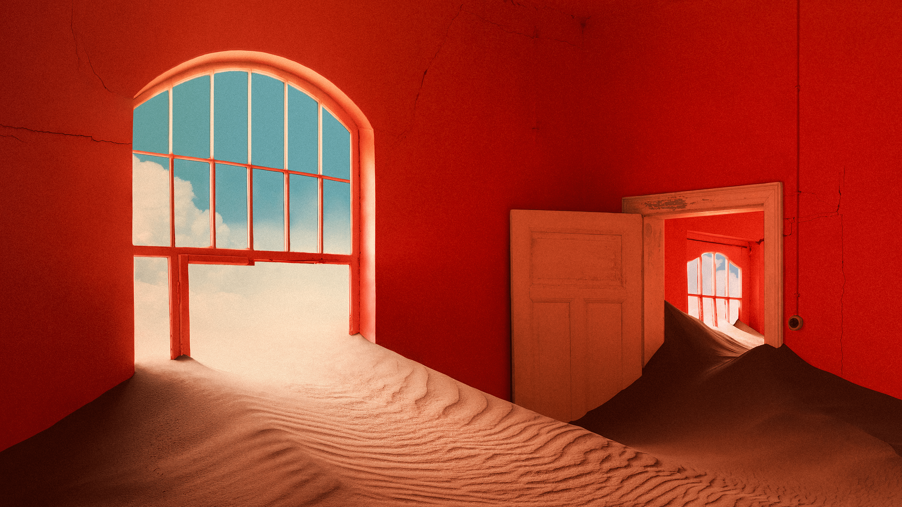
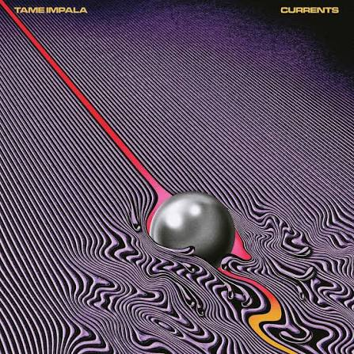
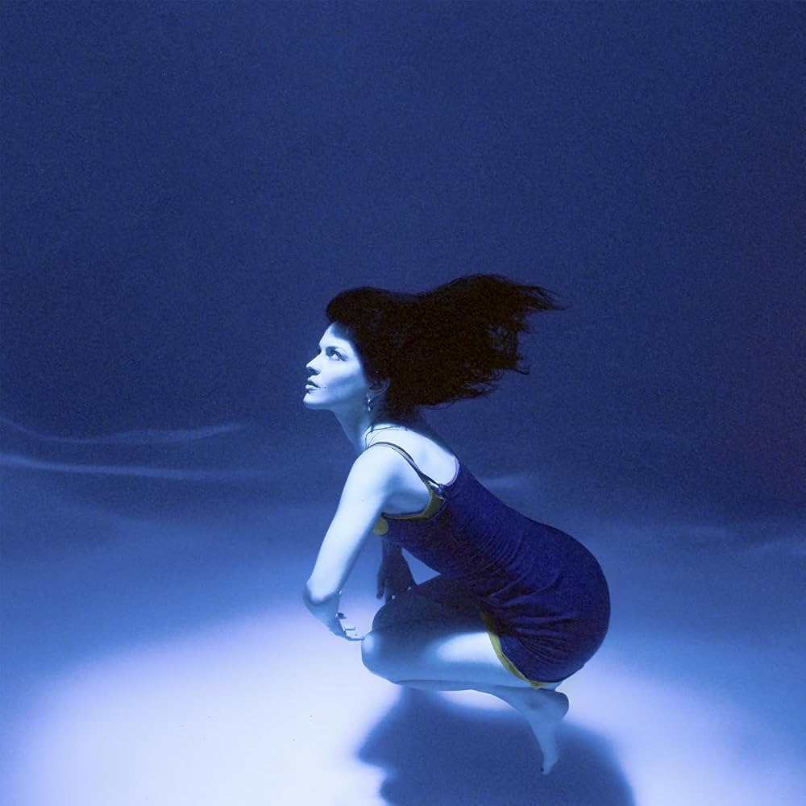
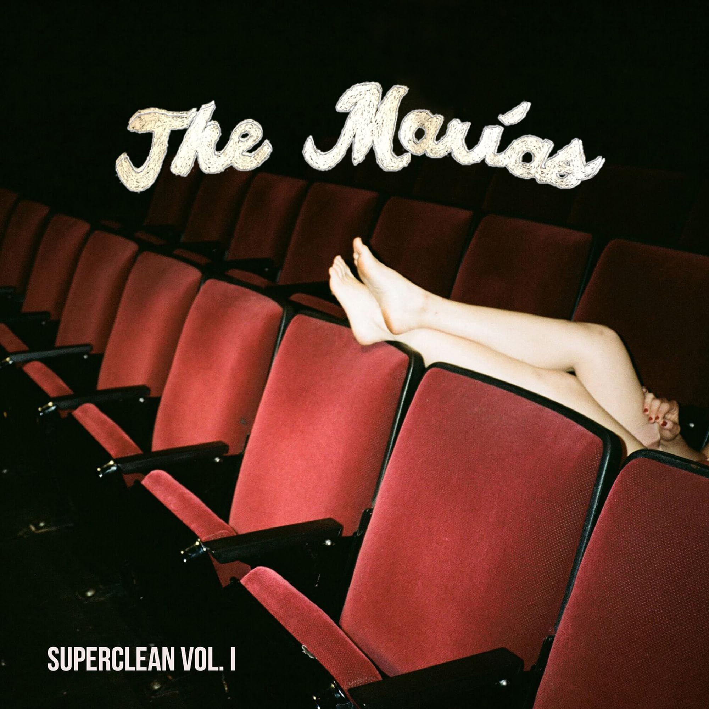
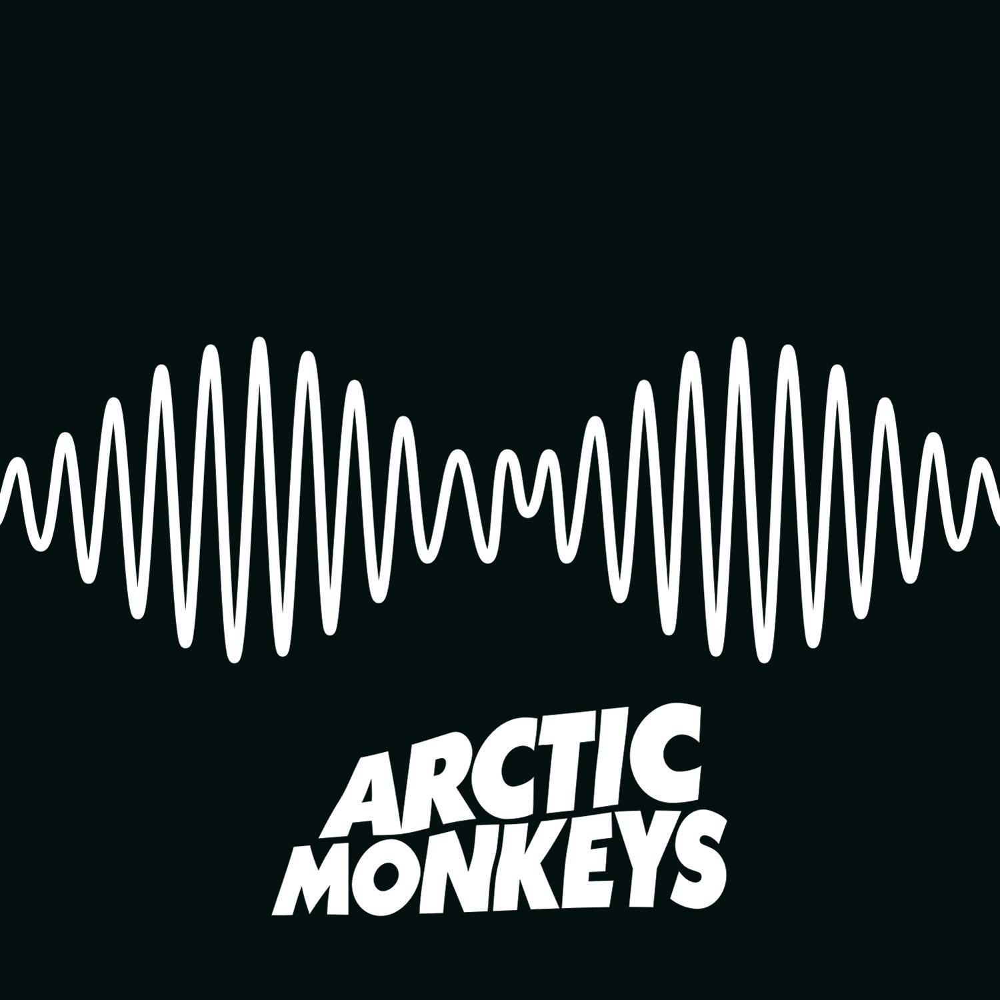
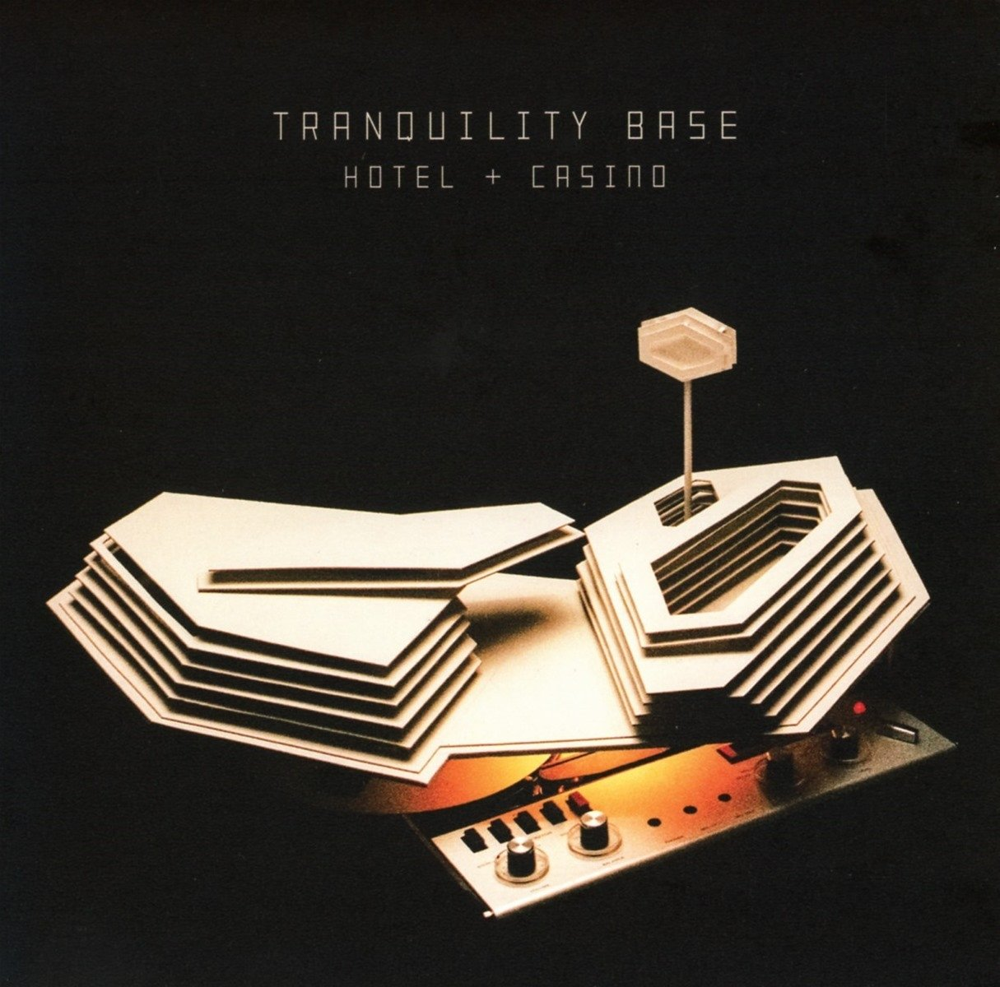
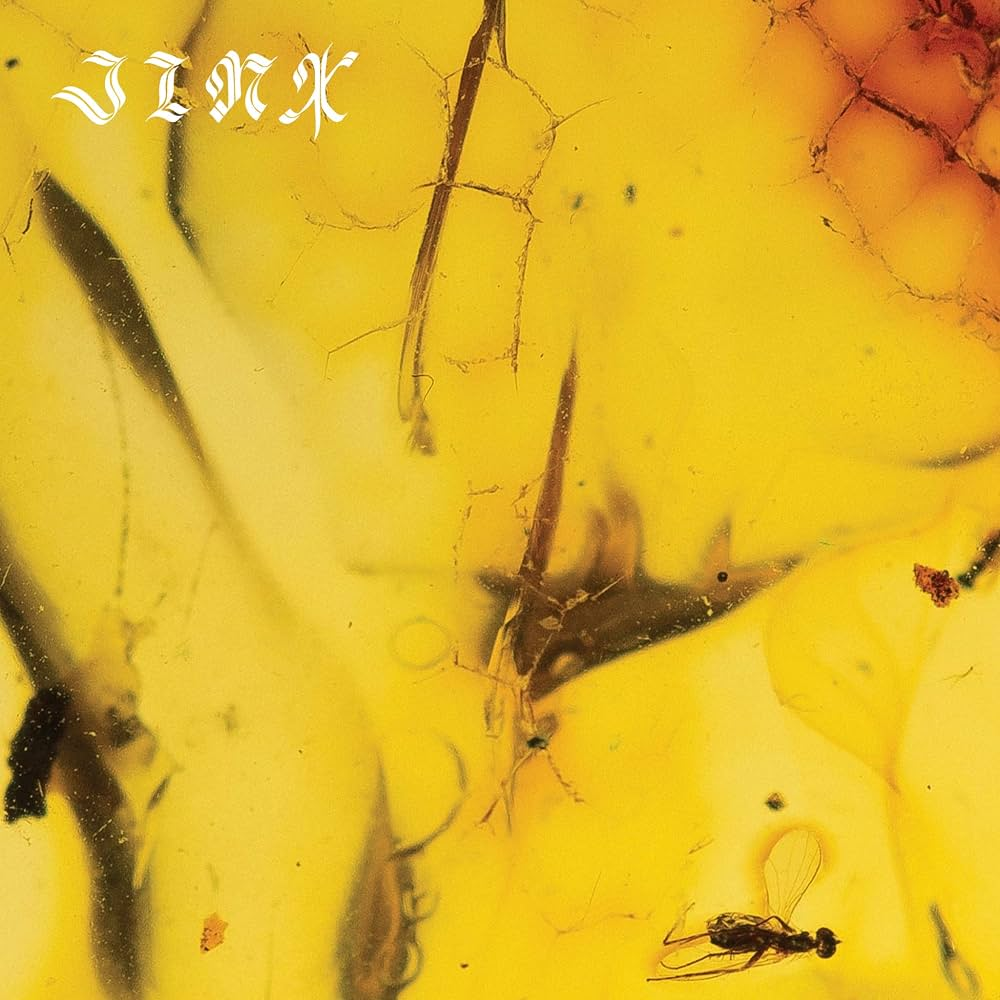

Escute no SpotifyThe Slow Rush
Artista: Tame Impala
Ano de Lançamento: 2020
Minha review: The Slow Rush não abandona a identidade psicodélica do Tame Impala, mas leva o projeto para um território mais próximo do pop, do synth-pop e da música eletrônica. Em comparação com Currents, a psicodelia aparece de forma menos evidente, enquanto a produção ganha ainda mais espaço. One More Hour, Posthumous Forgiveness e Is It True estão entre os grandes destaques — especialmente para quem gosta das faixas que crescem e revelam novas camadas ao longo da audição.
Nota: 10/10

Escute no SpotifyCurrents
Artista: Tame Impala
Ano de Lançamento: 2015
Minha review: Currents marcou uma fase importante da minha adolescência e continuou presente na minha vida adulta. É um álbum que combina psicodelia, sintetizadores e uma abordagem bastante autoral, com faixas como Let It Happen, The Less I Know The Better e Eventually. Também foi um trabalho decisivo para ampliar o alcance do Tame Impala e consolidar Kevin Parker como um dos nomes mais reconhecidos da música alternativa dos anos 2010. Continua sendo um dos meus álbuns favoritos.
Nota: 10/10

Escute no SpotifySubmarine
Artista: The Marias
Ano de Lançamento: 2024
Minha review: Submarine mantém a identidade atmosférica do The Marías, mas aposta em uma abordagem mais melancólica e introspectiva. O disco gira em torno de temas como término, saudade e amadurecimento emocional, com uma sonoridade que combina dream pop, indie pop e elementos eletrônicos. Depois de Cinema e dos dois volumes de Superclean, que já tinham estabelecido uma identidade muito própria, Submarine consegue expandir essa linguagem sem simplesmente repetir a fórmula. É um álbum que merece ser ouvido com atenção.
Nota: 10/10
Astroworld
Artista: Travis Scott
Ano de Lançamento: 2018
Minha review: Astroworld é um dos meus álbuns de hip-hop favoritos e, na minha opinião, merecia ter levado o Grammy de Melhor Álbum de Rap. A produção é um dos grandes trunfos do disco: psicodélica, expansiva e cheia de detalhes, com contribuições de nomes como Kevin Parker, Mike Dean e Frank Dukes. O resultado é um trabalho bastante imersivo, que transita entre atmosferas e estilos sem perder a unidade. Astrothunder, Houstonfornication e Can't Say estão entre minhas faixas favoritas.
Nota: 10/10

Escute no SpotifySuperclean Vol. 1 & Vol. 2
Artista: The Marias
Ano de Lançamento: 2017–2018
Minha review: Superclean Vol. 1 e Vol. 2 foram meu primeiro contato com o The Marías — e bastaram para despertar meu interesse pela banda. Os dois EPs misturam pop, jazz e psicodelia de um jeito muito característico, com vocais suaves e arranjos que criam uma atmosfera própria. Tenho uma preferência especial pelo segundo volume, cujas faixas considero particularmente consistentes; o primeiro também tem ótimos momentos e ajuda a apresentar a sonoridade que a banda desenvolveria nos trabalhos seguintes.
Nota: 10/10

Escute no SpotifyAM
Artista: Arctic Monkeys
Ano de Lançamento: 2013
Minha review: AM é um dos discos mais influentes do indie rock e do rock alternativo dos anos 2010. A combinação de riffs marcantes, grooves contagiantes e uma estética mais noturna ajudou a definir uma sonoridade que seria amplamente reproduzida nos anos seguintes. Comparado aos trabalhos posteriores do Arctic Monkeys, este álbum tem uma postura mais direta, confiante e descontraída — quase uma trilha sonora para uma noite que parece não ter hora para acabar. A influência que exerceu é difícil de ignorar.
Nota: 10/10

Escute no SpotifyTranquility Base Hotel & Casino
Artista: Arctic Monkeys
Ano de Lançamento: 2018
Minha review: A mudança de direção do Arctic Monkeys não é exatamente uma novidade, mas Tranquility Base Hotel & Casino representa uma das reinvenções mais radicais da banda. Em vez de apostar no rock direto de AM, o disco explora uma sonoridade mais experimental, com elementos de lounge, jazz e space rock. Para quem esperava uma continuação do estilo que popularizou a banda, a mudança pode ter soado como uma grande ruptura. Para mim, foi uma surpresa muito positiva. O álbum constrói um universo próprio, com referências à ficção científica, ao cinema e à literatura, além de letras cheias de imagens e observações peculiares. É uma experiência que recompensa quem aceita deixar de lado as expectativas e entrar no clima do disco.
Nota: 10/10
The Music of Red Dead Redemption 2: Original Score
Artista: Woody Jackson, Colin Stetson, Arca e outros
Ano de Lançamento: 2019
Minha review: Trilhas sonoras de jogos têm um espaço especial na minha playlist, e a música de Red Dead Redemption 2 é um dos melhores exemplos do quanto elas podem contribuir para a identidade de uma obra. A trilha original, composta por Woody Jackson e enriquecida pela participação de músicos como Colin Stetson e Arca, constrói uma paisagem sonora que evoca o Velho Oeste sem se limitar aos clichês do gênero. Há momentos de contemplação, tensão, urgência, tristeza e esperança, todos integrados ao mundo do jogo. É, para mim, um dos trabalhos musicais mais marcantes da Rockstar.
Nota: 10/10

Escute no SpotifyJinx
Artista: Crumb
Ano de Lançamento: 2019
Minha review: Conheci o Crumb em 2023, mas, na época, a sonoridade da banda não me conquistou. Quando voltei a ouvir Jinx em 2024, com mais atenção e outra disposição, a experiência foi bem diferente. A mistura de indie rock e psicodelia, com arranjos que parecem flutuar entre o familiar e o estranho, acabou me cativando. Fall Down e Part III são minhas faixas favoritas — daquelas que consigo ouvir repetidamente sem perder o interesse. Jinx é uma ótima porta de entrada para o universo do Crumb e merece mais reconhecimento entre os fãs de indie psicodélico.
Nota: 10/10

Ice Melt
Artista: Crumb
Ano de Lançamento: 2021
Minha review: Comecei a ouvir Ice Melt depois de Jinx e, em comparação, encontrei um disco com faixas mais imediatas e melodias que ficam na cabeça com mais facilidade. A sonoridade do Crumb continua presente, mas algumas músicas parecem apostar em estruturas mais acessíveis e refrões mais marcantes. BNR é minha faixa favorita; as outras também têm bons momentos, embora não tenham causado a mesma impressão ou permanecido tanto na memória. No conjunto, é um álbum que amplia a sonoridade da banda sem perder sua identidade.
Nota: 10/10